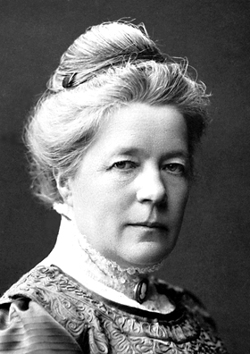

SELMA LAGERLÖF
Selma Lagerlöf là người đàn bà thứ nhất được giải thưởng Nobel về văn chương, năm 1909. Hồi đó bà đang ở trong Hàn lâm viện Thụy Điển. Các trẻ em trên khắp thế giới say mê theo dõi Nils Holgersson trong cuộc du lịch kỳ thú của Nils khắp xứ Thụy Điển(1), và năm 1958, Viện Bảo Tàng Giáo khoa ở Paris đã trưng bày một loạt bức tranh bằng thuốc màu hòa nước và bằng bút chì của các em bé nhân đọc truyện du lịch đó, một danh tác trong văn học nhân loại, mà cao hứng vẽ nên. Bà thật đa tài, giọng văn cảm động, lãng mạn, có chút mỉa mai, mà tư tưởng sắc sảo. Nhưng có thực là bà có giọng mỉa mai không? Hay chỉ là một lòng khoan hồng hơi đùa cợt, hơi chua chát chán đời, nhưng luôn âu yếm: bà biết rõ lòng người quá nên nhận ra được rằng nhiều người có những hành động đáng chê trách hay tầm thường quá đấy, nhưng tấm lòng của họ vẫn tốt hơn hành vi của họ.

Đời sống có những cái tàn nhẫn, xấu xa đấy, nhưng những cái đó không làm mất được vẻ đẹp của thiên nhiên hoặc tiếng hót du dương của chim chóc.
Truyện cổ tích Gosta Berling (cũng có tên là Morbacka) có đầy thi vị rút ngay ở trong cảnh thực ra. Ta thấy tuyết cuốn dưới ngọn gió, thấy cây ăn trái trổ bông, thấy những đàn ngồng trời bay qua trên đầu; ta thấy tình yêu run rẩy, lúc thì được thỏa mãn, lúc thì bị hủy diệt, nhưng bị hủy rồi thì lại, như loài phượng hoàng, tái sinh từ đám tro tàn, đẹp đẽ hơn trước nữa. Chính cuộc đời của Selma Lagerlöf cũng như vậy. Văn của bà thật giống bà.
Khi bà chào đời ở Amtervik (miền Varmland) vào lúc 9 giờ tối ngày 20 tháng 11 năm 1858, thì hai người lấy cỗ bài tây ra bói để đoán tương lai bà.
Một người là bà nội, một người là bà cô của Selma, cả hai y như những mụ phù thủy da nâu, mắt đen, sáng ngời, mũi quặm trong một tiểu thuyết của Dickens.
Selma sau này dí dỏm và âu yếm kể lại chuyện đó mà hồi nhỏ bà đã được nghe không biết bao lần.
Bà Lagerlöf (2) hỏi:
- Chị thấy gì đấy?
Bà cô Wennevik đáp:
- Tôi thấy một bệnh gì đó như đeo đuổi con nhỏ này hoài, tôi ngại rằng suốt đời nó sẽ phải mang bệnh thôi.
Bà Lagerlöf vốn lạc quan, chỉ nhìn thấy phía tốt của mọi sự, bảo:
- Ai mà chẳng có nỗi khổ này, nỗi khổ nọ, mà không khổ thì chẳng làm nên cái gì cả; nếu nó bệnh tật, ốm yếu thì nó sẽ sống ở trong nhà, ít đi đây, đi đó; xét cho cùng, như vậy mà lại sướng.
Bà cô Wennervik lại đặt ngón tay trỏ lên từng lá bài một, đếm lại, rồi nháy mắt, vẻ tinh quái, bảo:
- Nó sẽ phải đi xa nhiều lắm, bắt buộc phải dời chỗ ở hoài.
Bà Lagerlöf thở dài:
- Đá mà lăn hoài thì làm sao rêu bám vào được(3).
Bà cụ suốt đời không dời chỗ ở, nên buồn rầu cho cháu nội sẽ phải lang thang hết nơi này nơi khác.
“Nếu nó đau ốm hoài, không kiếm ăn được, thì chắc là phải sống nhờ bà con, ở nhà người này ít lâu rồi qua nhà người khác. Không làm việc được, không giúp gì được cho ai thì đời còn vui nỗi gì.
Bà cô Wennervik, tính lại các con bài:
- Bà đừng ngại, trái lại nó sẽ làm việc chứ. Nó sẽ làm việc suốt đời.
Bà Lagerlöf lại thở dài, đưa ý kiến này:
- Hay là sẽ phải làm công cho người khác để kiếm ăn, và sẽ phải đổi chủ hoài.
Bà cụ cho rằng không có số phận nào điêu đứng bằng phải làm thuê làm mướn, ngửa tay nhận tiền công của người. Rồi mặt bà cụ tươi lên, bà nói tiếp:
- Nhưng cũng có người khéo xoay xở đâu vào đấy, như chị đó. Miễn sao nó cũng được tài giỏi như chị.
Bà cô Wennervik cúi gầm mặt xuống mấy quân bài, mải mê tới nỗi không nghĩ rằng lời đoán của mình có làm cho người nghe khó chịu không, bỗng bà thốt lên:
- Suốt đời con nhỏ này không mó tới cái khung cửi đâu. Tôi đoán rằng nó sẽ làm việc nhiều về sách vở, giấy tờ.
Bà Lagerlöf cúi xuống nhìn các quân bài để tìm hiểu tại sao bà Wennervik lại đoán như vậy. Bà ngạc nhiên, lặp lại lời bà Wennervik:
- Chị bảo nó sẽ làm việc nhiều về sách vở giấy tờ hả? Thế thì có lẽ nó sẽ lấy một thầy phó trợ tế tầm thường nào đó, và chồng nó sẽ bị đổi từ giáo
khu này tới giáo khu khác, mãi sau mới được ở yên một chỗ chăng? Thôi cũng được, miễn sao vợ chồng nó quý mến nhau...
Bà Wennervik đưa ngón tay trỏ lên, ngắt lời:
- Dì muốn tôi nói thực cho dì nghe không?
- Thì cứ nói đi.
- Nó sẽ không bao giờ lập gia đình!
Và quả nhiên, cuộc đời của Selma Lagerlöf sau này đúng như vậy.
Chưa đầy bảy tuổi mà đã muốn thành một tiểu thuyết gia, và bà thành công lần đầu tiên ngay từ hồi mười hai tuổi. Miền Warmland vinh hãnh rằng có được một nữ sĩ tí hon.
Tính bà hồi đó lanh lợi vui vẻ, mà gia đình cũng hòa thuận, nên bà sung sướng. Nhưng rồi hai tai nạn xảy ra làm cho cảnh yên tĩnh, âu yếm đó lâm nguy: trước hết, bà bị một bệnh làm cho bà gần như bị tê liệt trong nhiều năm, sau này thành tật, đi hơi vẹo người một bên; rồi gia đình gặp vận rủi, suy sút tới nổi phải bán điền trang Morcbacka, nơi sinh trưởng của bà. Lần đó bà muốn đứt ruột: Morcbacka chẳng phải chỉ là cái tổ ấm gia đình bà mà còn là nơi giữ bao nhiêu kỷ niệm thâm trầm nó làm cho tâm hồn bà phong phú và cuộc đời bà đầy thi vị nữa.
Mùa xuân, đất nở ra, cây cỏ phát sinh; mùa thu, từng đàn chim di thê bay trên trời; mùa đông cây cối trụi lá, chỉ còn trơ thân và cành đen, những cảnh đó, khắc sâu vào lòng bà, sau này bà dùng làm khung cảnh cho các truyện Gosta Berling và Nils Holgersson. Nông dân, mục sư, người nghèo cũng như người giàu trong miền Warmland đều lưu cho bà nhiều ấn tượng mạnh mẽ, và sở dĩ bà sáng tác, một phần cũng là để có tiền chuộc lại được điền trang Morcbacka. Bà rán học để kéo lại thời gian đã mất vì đau ốm, vô trường Sư Phạm Stockholm, tính sau làm nữ giáo viên. Nhưng rồi bà sớm bỏ nghề đó để chuyên sáng tác.
Bước đầu trong văn nghiệp của bà gặp nhiều nỗi trắc trở. Tháng giêng năm 1887, bà làm quen với Nam tước phu nhân Sophie Adlersparre, người sáng lập tạp chí Gia đình, và làm chủ bút tờ Dagny.
Bà ký bút hiệu là Esselde, chiến đấu không ngừng để giải phóng phụ nữ, nhưng vinh dự lớn của bà là đã tìm ra được Selma Lagerlöf, giúp đỡ, khuyến khích Lagerlöf. Chính nhờ Sophie Adlerspaưe nâng đỡ mà Lagerlöf viết truyện Gosta Berling. Truyện đó khi được trích đăng từng đoạn thì được hoan nghênh nhiệt liệt, mà khi xuất bản thành sách, vào lễ Giáng sinh năm 1891, thì lại bán ế. Cả hai bà: Esselde và Lagerlöf đều nản lòng, chua xót, nhưng Esslde nhất định không chịu tuyệt vọng.
Năm sau, Gosta Berling được Ida Falbe-Hansen dịch ra tiếng Đan Mạch. Bà này giới thiệu Lagerlöf với bà Sophie Alberti, giám đốc một hội đọc sách quan trọng ở Copenhague. Hai bà đồng ý thay phiên nhau tổ chức những cuộc hội họp văn nghệ ở nhà mình. Cũng công toi. Trừ vài người khen vị tình còn thì hết thảy đều tỏ vẻ lãnh đạm. Thất bại, nhưng hai bà vẫn không thối chí, bàn với nhau phải làm sao cho Selma Lagerlöf tiếp xúc với Georg Brandès, nhà phê bình nổi danh ở Đan Mạch, để ông ta chú ý tới tác phẩm. Nhưng dễ gì được Georg Brandès tiếp, mà có được tiếp thì làm sao nói thẳng với ông điều mình muốn nhờ cậy ông được? Sau cùng hai bà quyết định rằng Selma Lagerlöf lấy cớ nhân có dịp ghé Copenhague, yêu cầu ông ta cho phép được gặp mặt để nhờ ông cho biết mình có chút thiên tư nào không, có thể thành nhà văn được không?
Selma Lagerlöf đã ghé nhà Sophie Alberti. Mọi người hồi hộp khi Georg Brandès lại đó.
Thật là một sự bất ngờ lạ lùng, y như trên sân khấu.
“Thái độ ông ấy không có chút gì là kẻ cả, ra vẻ hạ cố. Ông ấy hiểu rất rộng, từng trải nhiều, tuệ nhãn sâu sắc nên chẳng cần có những cử chỉ ngôn ngữ huênh hoang. Nếu ông thấy rõ cảm tưởng ông đã gây ra cho tôi, thi ông cứ để lộ ra, không giấu giếm gì cả...
“Ông có cái gì giống một y sĩ. Nếu ông nói nhiều về ông thì không phải là để khoe mà để cho tôi có thi giờ bình tĩnh lại, được thoải mái, như vậy ông mới “bắt mạch” tôi được. Chắc chắn là ông không muốn làm cho tôi phục ông. Hôm đó ông chỉ đóng cái vai phê bình văn học, tìm hiểu xem tên lính mới là tôi này có giúp ích gì cho văn học được không, có đáng được khuyến khích không; hay trái lại, nên làm cho tôi cụt hứng ngay từ đầu đi thì hơn.
Trong cuộc tiếp kiến đó, ông cũng tỏ ra có tinh thần rộng rãi, hiểu biết, rất nhân từ, tấm lòng nhân từ của vị danh y”.
Ít bữa sau, báo chí đăng một bài dài ký tên G.B. phê bình cuốn Gosta Berling, và gió đổi chiều liền, y như có phép màu:
“Chiếc chìa khóa của Brandès đã mở cho tôi cánh cửa thành công, chẳng những ở Đan Mạch mà thôi, vì bài báo đó đã làm cho độc giả Thụy Điển chú ý tới tôi, rồi tác phẩm của tôi lại được dịch ra tiếng Đức nữa. Tình trạng của tôi “trước” và "sau’’ bài báo đó thật khác nhau hẳn và tôi luôn luôn coi Georg Brandès là người đã giúp nhiều cho tôi thành công; ông là ân nhân của tôi và không bao giờ tôi trả ông được hết món nợ tinh thần đó”.
Danh tiếng vang lên, để tránh những cuộc mời mọc, tiếp đón, Selma Lagerlöf về ở trong một thị trấn yên tĩnh nhất của Thụy Điển: thị trấn Falum, miền Dalécarlie. Tại đó bà có một bà chị có chồng, và nhiều bà con; bà có thể gây lại được đoàn thể gia tộc mà bà vẫn ước ao.
Dalécarlie là một trong những miền đặc biệt nhất, phong cảnh mê hồn nhất của Thụy Điển. Chính ở trong khung cảnh rất thích hợp đó, mà sau này bà nhận được giải thưởng Nobel về văn chương, giải thưởng đầu tiên phát cho một nữ sĩ cùng quốc tịch với người sáng lập ra nó. Năm đó là năm 1909.
Hai năm trước bà đã được viện đại học Upsal tặng cho bà hàm tiến sĩ danh dự.
Năm 1914, bà là phụ nữ duy nhất được vô Hàn Lâm Viện Thụy Điển.

Bài diễn văn bà đọc ngày mùng 10 tháng 11 năm 1909, trong bữa tiệc giải thưởng Nobel, nổi tiếng vì giọng nhã nhặn, đa cảm và dí dỏm.
Nhờ số tiền giải thưởng, bà chuộc lại được điền trang Morcbacka. Mặc dầu thời gian đã trôi qua, mặc dầu bà được hưởng cái vui thành công mà lòng lúc nào cũng nhớ nơi chôn nhau cắt rốn đó, vì vậy được trở về nhà cũ đó, bà sung sướng vô cùng.
Ở Thụy Điển có tục từ năm chục tuổi trở đi cứ mười năm một lần, lại làm lễ thọ để mừng đã thắng được thần chết. Hội họp, biếu hoa, gởi đồ mừng, đánh điện chúc thọ. Ngày Selma Lagerlöf làm lễ thất tuần, có tổ chức một bữa tiệc lớn, do Hoàng
Tử chủ tọa. Đồng thời hí viện Stockolm diễn lần đầu vở kịch Cavaliers dEkeby (kỵ sĩ Ekeby).
Các tác phẩm của bà đã được dịch ra trên ba mươi lăm ngôn ngữ. Những tác phẩm tiêu biểu nhất đã được đưa lên màn ảnh. Greta Garbo đã đóng vai “Bá Tước phu nhân Elisabeth Dohna”.
Một nhật báo Thụy Điển viết: “Bà hoàng trên văn đàn của chúng ta được chào mừng như một bà hoàng chính cống”. Bà mỉm cười, đáp lại: “Thì ít nhất cũng phải cho tôi tán trợ sự du lịch ở Warmland chứ”.
Có những tàu chuyển khách mang tên Gosta Berling và Selma Lagerlöf; và trên các tấm bưu thiếp trong miền, người ta in tên những nhân vật
trong các tác phẩm của bà.
Bà mất năm 1940.
Trước khi ngừng bút, tôi xin chép đoạn dưới đây để độc giả đọc lại. Mới coi thì có vẻ phúng thích bi thảm, nhưng xét kỹ thì là một triết lý sâu sắc.
“Đừng lại Svartsjo mà chết đấy nhé, chết ở đó thì chỉ có mỗi một cỗ quan tài đen như mọi người thôi, vì ở đó chỉ có mỗi một người thợ mộc đóng hòm mà cũng chỉ có mỗi một kiểu hòm. Lại thêm, không có người nào khóc đâu, các chiếc mùi xoa vẫn giữ được nếp đàng hoàng, không ai đưa lên chặm mắt đâu. Vậy bạn khỏi phải ngại rằng người ta không tặng mình nhiều nước mắt bằng tặng những người khác. Nếu còn cái tục khóc khi đưa ma thì người ta cũng khóc đấy, nhưng tục đó đã bỏ rồi. Bạn hiểu chứ, nếu có nhiều cảnh rầu rĩ, nhiều nước mắt trên một cái huyệt nào đó thì kẻ không được ai thương tiếc tất phải mủi lòng.
Và bạn nên nhớ rằng tất cả dân trong giáo khu đều có vẻ bé nhỏ, nghèo nàn. Đâu phải là hạng dân thành thị bảnh bao sang trọng, chỉ là những dân Svartsjo chất phác thôi mà. Chỉ có mỗi một người là lớn và đáng kính: chính là bạn đã chết rồi đấy!”.
Chú thích:
(1) Tác giả muốn nói một tác phẩm nổi danh của Selma Lagerlöf “ Cuộc Phiêu Lưu Kỳ Diệu Của Nils’’ viết cho trẻ em đọc năm 1906 - 1907.
(2) Đây là bà nội của Selma Lagerlöf.
(3) Nghĩa là thay nghề nghiệp hoặc chỗ ở hoài thì rốt cuộc chẳng nên gì cả.